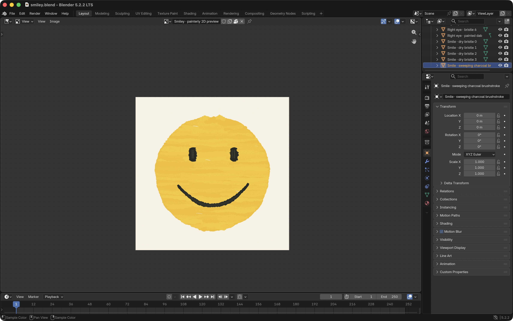

Mini assignments / 01
Faces
A smiley face in three media: geometric forms in p5.js, a digital drawing in GIMP, and a painterly study in Blender.
Drawing with code
p5.jsA face built from a circle and arcs. The sketch runs live below.
Drawing in GIMP
GIMPA basic smiley made in GIMP, with oval eyes and a curved smile.

A painterly study
BlenderA textured smiley with uneven edges and visible brush-like marks.
Created with Chat GPT-6 Astra using a Blender Python script.

Process screenshot · Blender workspace
